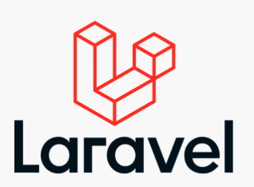

1. Introducción básica a Laravel
1.1. ¿Qué es Laravel?

Laravel es un framework PHP open-source, creado por Taylor Otwell en 2011, muy popular para desarrollar aplicaciones web modernas gracias a su arquitectura elegante basada en el patrón MVC (Model-View-Controller) y a sus herramientas que simplifican tareas como enrutamiento, autenticación y gestión de bases de datos.
1.2. Características principales
- Eloquent ORM: sistema de mapeo objeto-relacional para bases de datos
- Blade: motor de plantillas potente y sencillo
- Artisan: interfaz de línea de comandos para generar código
- Middleware: filtros HTTP para proteger rutas
- Routing: sistema de enrutamiento expresivo
- Migraciones: control de versiones para bases de datos
- Authentication: sistema de autenticación incluido
1.3. Estructura del proyecto Laravel
mi-proyecto/
├── app/ # Lógica de la aplicación
│ ├── Http/
│ │ ├── Controllers/ # Controladores
│ │ ├── Middleware/ # Middleware personalizados
│ │ └── Kernel.php # Kernel HTTP
│ ├── Models/ # Modelos Eloquent
│ └── Providers/ # Service providers
├── bootstrap/ # Archivos de arranque
├── config/ # Archivos de configuración
├── database/ # Migraciones y seeders
├── public/ # Punto de entrada (index.php)
├── resources/ # Vistas, assets sin compilar
│ └── views/ # Plantillas Blade
├── routes/ # Archivos de rutas
│ ├── web.php # Rutas web
│ └── api.php # Rutas API
├── storage/ # Archivos generados
└── vendor/ # Dependencias Composer
1.4. Instalación
# Opción 1: Con Composer
composer create-project laravel/laravel mi-proyecto
# Opción 2: Con Laravel Installer
composer global require laravel/installer
laravel new mi-proyecto
# Iniciar servidor de desarrollo
cd mi-proyecto
php artisan serve
# Visitar: http://localhost:8000
1.5. Patrón MVC en Laravel
web.php] B -->|Llama| C[Controller] C -->|Lee/Escribe| D[Model] D -->|Eloquent ORM| E[(Database)] C -->|Retorna| F[View
Blade] F -->|HTTP Response| A style B fill:#e1f5ff style C fill:#fff4e1 style D fill:#ffe1e1 style F fill:#e1ffe1
(web.php) participant C as Controller participant M as Model
(Eloquent) participant DB as Database participant V as View
(Blade) U->>R: HTTP Request R->>C: Llama al método del controlador C->>M: Lee/Escribe datos M->>DB: Consulta SQL (Eloquent ORM) DB-->>M: Resultados M-->>C: Colección / Modelo C->>V: Retorna vista con datos V-->>U: HTTP Response (HTML)
2. Rutas en web.php
2.1. Archivo routes/web.php
El archivo routes/web.php define todas las rutas HTTP de la aplicación. Laravel proporciona métodos para cada verbo HTTP.
<?php
// routes/web.php
use Illuminate\Support\Facades\Route;
// Ruta básica
Route::get('/', function () {
return view('welcome');
});
// Ruta con texto
Route::get('/hola', function () {
return 'Hola Mundo';
});
// Ruta con parámetros
Route::get('/usuario/{id}', function ($id) {
return "Usuario ID: " . $id;
});
// Parámetro opcional
Route::get('/saludo/{nombre?}', function ($nombre = 'Invitado') {
return "Hola, " . $nombre;
});
// Parámetros con restricciones
Route::get('/producto/{id}', function ($id) {
return "Producto: " . $id;
})->where('id', '[0-9]+'); // Solo números
Route::get('/perfil/{username}', function ($username) {
return "Perfil de: " . $username;
})->where('username', '[A-Za-z]+'); // Solo letras
?>
2.2. Verbos HTTP
<?php
// GET - Obtener datos
Route::get('/articulos', function () {
return "Lista de artículos";
});
// POST - Enviar datos
Route::post('/articulos', function () {
return "Crear nuevo artículo";
});
// PUT/PATCH - Actualizar
Route::put('/articulos/{id}', function ($id) {
return "Actualizar artículo " . $id;
});
// DELETE - Eliminar
Route::delete('/articulos/{id}', function ($id) {
return "Eliminar artículo " . $id;
});
// Múltiples verbos
Route::match(['get', 'post'], '/formulario', function () {
return "GET o POST";
});
// Todos los verbos
Route::any('/cualquiera', function () {
return "Cualquier método HTTP";
});
?>
2.3. Rutas nombradas
<?php
// Asignar nombre a una ruta
Route::get('/dashboard', function () {
return view('dashboard');
})->name('dashboard');
Route::get('/perfil/{id}', function ($id) {
//...
})->name('perfil.ver');
// Usar rutas nombradas
// En controlador:
return redirect()->route('dashboard');
// En vista Blade:
// <a href="{{ route('dashboard') }}">Dashboard</a>
// <a href="{{ route('perfil.ver', ['id' => 5]) }}">Ver perfil</a>
?>
2.4. Grupos de rutas
<?php
// Prefijo común
Route::prefix('admin')->group(function () {
Route::get('/usuarios', function () {
// URL: /admin/usuarios
});
Route::get('/productos', function () {
// URL: /admin/productos
});
});
// Middleware común
Route::middleware('auth')->group(function () {
Route::get('/dashboard', function () {
// Requiere autenticación
});
Route::get('/perfil', function () {
// Requiere autenticación
});
});
// Prefijo + middleware + nombre
Route::prefix('admin')
->middleware('auth')
->name('admin.')
->group(function () {
Route::get('/usuarios', function () {
// URL: /admin/usuarios
// Nombre: admin.usuarios
})->name('usuarios');
});
?>
2.5. Rutas a controladores
<?php
use App\Http\Controllers\ProductoController;
use App\Http\Controllers\UserController;
// Método específico
Route::get('/productos', [ProductoController::class, 'index']);
// CRUD completo con resource
Route::resource('productos', ProductoController::class);
// Genera automáticamente:
// GET /productos -> index()
// GET /productos/create -> create()
// POST /productos -> store()
// GET /productos/{id} -> show($id)
// GET /productos/{id}/edit -> edit($id)
// PUT /productos/{id} -> update($id)
// DELETE /productos/{id} -> destroy($id)
// Resource con solo algunas rutas
Route::resource('users', UserController::class)
->only(['index', 'show']);
Route::resource('posts', PostController::class)
->except(['destroy']);
?>
3. Controladores (Controllers)
3.1. Crear un controlador
# Crear controlador básico
php artisan make:controller ProductoController
# Crear controlador con métodos resource
php artisan make:controller ProductoController --resource
# Crear controlador con modelo
php artisan make:controller ProductoController --model=Producto
3.2. Estructura de un controlador
<?php
// app/Http/Controllers/ProductoController.php
namespace App\Http\Controllers;
use Illuminate\Http\Request;
class ProductoController extends Controller
{
// Listar todos los productos
public function index()
{
$productos = [
['id' => 1, 'nombre' => 'Laptop', 'precio' => 999],
['id' => 2, 'nombre' => 'Mouse', 'precio' => 25],
];
return view('productos.index', ['productos' => $productos]);
}
// Mostrar formulario de creación
public function create()
{
return view('productos.create');
}
// Guardar nuevo producto
public function store(Request $request)
{
// Validar datos
$validado = $request->validate([
'nombre' => 'required|max:255',
'precio' => 'required|numeric|min:0',
]);
// Guardar en base de datos (ejemplo)
// Producto::create($validado);
return redirect()->route('productos.index')
->with('success', 'Producto creado');
}
// Mostrar un producto específico
public function show($id)
{
// Producto::findOrFail($id);
return view('productos.show', ['id' => $id]);
}
// Mostrar formulario de edición
public function edit($id)
{
// $producto = Producto::findOrFail($id);
return view('productos.edit', ['id' => $id]);
}
// Actualizar producto
public function update(Request $request, $id)
{
$validado = $request->validate([
'nombre' => 'required|max:255',
'precio' => 'required|numeric|min:0',
]);
// $producto = Producto::findOrFail($id);
// $producto->update($validado);
return redirect()->route('productos.show', $id)
->with('success', 'Producto actualizado');
}
// Eliminar producto
public function destroy($id)
{
// $producto = Producto::findOrFail($id);
// $producto->delete();
return redirect()->route('productos.index')
->with('success', 'Producto eliminado');
}
}
?>
3.3. Controlador simple
<?php
// app/Http/Controllers/HomeController.php
namespace App\Http\Controllers;
use Illuminate\Http\Request;
class HomeController extends Controller
{
public function inicio()
{
$titulo = "Bienvenido a mi sitio";
$descripcion = "Este es un ejemplo de Laravel";
return view('home', [
'titulo' => $titulo,
'descripcion' => $descripcion
]);
}
public function contacto()
{
return view('contacto');
}
public function enviarContacto(Request $request)
{
$nombre = $request->input('nombre');
$email = $request->input('email');
$mensaje = $request->input('mensaje');
// Procesar formulario...
return back()->with('mensaje', 'Formulario enviado');
}
}
// routes/web.php
Route::get('/', [HomeController::class, 'inicio'])->name('home');
Route::get('/contacto', [HomeController::class, 'contacto'])->name('contacto');
Route::post('/contacto', [HomeController::class, 'enviarContacto']);
?>
3.4. Tipos de respuestas
<?php
namespace App\Http\Controllers;
class RespuestaController extends Controller
{
// Retornar vista
public function vista()
{
return view('ejemplo', ['dato' => 'valor']);
}
// Retornar JSON (para APIs)
public function json()
{
return response()->json([
'success' => true,
'data' => ['nombre' => 'Juan', 'edad' => 25]
]);
}
// Retornar texto
public function texto()
{
return response('Hola mundo', 200)
->header('Content-Type', 'text/plain');
}
// Redirigir
public function redirigir()
{
// A ruta
return redirect('/dashboard');
// A ruta nombrada
return redirect()->route('home');
// Atrás
return back();
// Con datos flash
return redirect()->route('home')->with('mensaje', 'Guardado');
}
// Descargar archivo
public function descargar()
{
$ruta = storage_path('app/documento.pdf');
return response()->download($ruta);
}
}
?>
4. Blade (Motor de plantillas)
4.1. Sintaxis básica
{{-- resources/views/ejemplo.blade.php --}}
{{-- Imprimir variables (escapa HTML automáticamente) --}}
<h1>{{ $titulo }}</h1>
<p>{{ $descripcion }}</p>
{{-- Imprimir sin escapar (PELIGROSO con datos de usuario) --}}
<div>{!! $htmlContenido !!}</div>
{{-- Comentarios Blade (no aparecen en HTML) --}}
{{-- Este es un comentario --}}
{{-- Mostrar valor por defecto si variable no existe --}}
<p>{{ $variable ?? 'Valor por defecto' }}</p>
4.2. Estructuras de control
{{-- IF / ELSEIF / ELSE --}}
@if($edad >= 18)
<p>Eres mayor de edad</p>
@elseif($edad >= 13)
<p>Eres adolescente</p>
@else
<p>Eres menor de edad</p>
@endif
{{-- UNLESS (a menos que) --}}
@unless($usuario->esAdmin())
<p>No tienes acceso</p>
@endunless
{{-- ISSET / EMPTY --}}
@isset($nombre)
<p>El nombre es: {{ $nombre }}</p>
@endisset
@empty($productos)
<p>No hay productos</p>
@endempty
{{-- AUTH (usuario autenticado) --}}
@auth
<p>Bienvenido, {{ auth()->user()->name }}</p>
@endauth
@guest
<a href="/login">Iniciar sesión</a>
@endguest
4.3. Bucles
{{-- FOR --}}
@for($i = 0; $i < 10; $i++)
<p>Número: {{ $i }}</p>
@endfor
{{-- FOREACH --}}
@foreach($productos as $producto)
<div>
<h3>{{ $producto->nombre }}</h3>
<p>${{ $producto->precio }}</p>
</div>
@endforeach
{{-- FORELSE (con caso de array vacío) --}}
@forelse($usuarios as $usuario)
<li>{{ $usuario->nombre }}</li>
@empty
<p>No hay usuarios registrados</p>
@endforelse
{{-- WHILE --}}
@while($contador > 0)
<p>{{ $contador-- }}</p>
@endwhile
{{-- Variable $loop en bucles --}}
@foreach($items as $item)
@if($loop->first)
<p>Primer elemento</p>
@endif
<p>{{ $loop->iteration }}. {{ $item }}</p>
@if($loop->last)
<p>Último elemento</p>
@endif
@endforeach
4.4. Layouts y herencia
{{-- resources/views/layouts/app.blade.php --}}
<!DOCTYPE html>
<html>
<head>
<title>@yield('titulo', 'Mi Sitio')</title>
<link rel="stylesheet" href="/css/app.css">
@stack('styles')
</head>
<body>
<header>
<h1>Mi Aplicación Laravel</h1>
<nav>
<a href="/">Inicio</a>
<a href="/productos">Productos</a>
</nav>
</header>
<main>
@yield('contenido')
</main>
<footer>
<p>© 2024 Mi Sitio</p>
</footer>
<script src="/js/app.js"></script>
@stack('scripts')
</body>
</html>
{{-- resources/views/productos/index.blade.php --}}
@extends('layouts.app')
@section('titulo', 'Lista de Productos')
@push('styles')
<link rel="stylesheet" href="/css/productos.css">
@endpush
@section('contenido')
<h2>Productos</h2>
<ul>
@foreach($productos as $producto)
<li>{{ $producto->nombre }} - ${{ $producto->precio }}</li>
@endforeach
</ul>
@endsection
@push('scripts')
<script src="/js/productos.js"></script>
@endpush
4.5. Componentes
{{-- resources/views/components/alerta.blade.php --}}
<div class="alert alert-{{ $tipo }}">
<strong>{{ $titulo }}</strong>
{{ $slot }}
</div>
{{-- Usar el componente --}}
<x-alerta tipo="success" titulo="Éxito">
El producto fue guardado correctamente.
</x-alerta>
<x-alerta tipo="danger" titulo="Error">
No se pudo completar la operación.
</x-alerta>
4.6. Incluir otras vistas
{{-- Incluir parcial --}}
@include('partials.header')
{{-- Incluir con datos --}}
@include('partials.producto', ['producto' => $producto])
{{-- Incluir si existe --}}
@includeIf('partials.sidebar')
{{-- Incluir cuando condición --}}
@includeWhen($usuario->esAdmin(), 'partials.admin-menu')
5. Formularios y comunicación con controlador
5.1. Estructura básica de un formulario
Los formularios en Blade se crean con la etiqueta HTML <form> y necesitan un token CSRF para seguridad.
{{-- resources/views/films/create.blade.php --}}
@extends('layouts.app')
@section('contenido')
<h2>Crear nueva película</h2>
{{-- Usar route('nombreRuta') para generar la URL --}}
<form action="{{ route('createFilm') }}" method="POST">
{{-- Token CSRF (obligatorio en Laravel) --}}
{{ csrf_field() }}
<label for="name">Nombre</label>
<input type="text" name="name" id="name" required>
<br>
<label for="age">Año de estreno</label>
<input type="number" name="age" id="age" required>
<br>
<input type="submit" value="Enviar" />
</form>
@endsection
5.2. Token CSRF (Cross-Site Request Forgery)
Laravel protege las aplicaciones contra ataques CSRF. Todos los formularios POST, PUT, DELETE deben incluir un token CSRF.
{{-- Opción 1: Usando csrf_field() --}}
<form method="POST" action="/guardar">
{{ csrf_field() }}
<!-- resto del formulario -->
</form>
{{-- Opción 2: Usando @csrf (alias más corto) --}}
<form method="POST" action="/guardar">
@csrf
<!-- resto del formulario -->
</form>
{{-- Opción 3: En AJAX --}}
<script>
fetch('/api/datos', {
method: 'POST',
headers: {
'X-CSRF-TOKEN': document.querySelector('meta[name="csrf-token"]').getAttribute('content')
}
});
</script>
5.3. Tipos de inputs en formularios
{{-- Text input --}}
<input type="text" name="nombre" placeholder="Ingresa tu nombre">
{{-- Email input --}}
<input type="email" name="email" required>
{{-- Password input --}}
<input type="password" name="password">
{{-- Number input --}}
<input type="number" name="edad" min="0" max="120">
{{-- Textarea --}}
<textarea name="descripcion" rows="5" cols="40"></textarea>
{{-- Select (dropdown) --}}
<select name="genero">
<option value="">Selecciona un género</option>
<option value="accion">Acción</option>
<option value="comedia">Comedia</option>
<option value="drama">Drama</option>
</select>
{{-- Checkbox --}}
<label>
<input type="checkbox" name="activo" value="1">
Película activa
</label>
{{-- Radio buttons --}}
<label>
<input type="radio" name="formato" value="2d">
2D
</label>
<label>
<input type="radio" name="formato" value="3d">
3D
</label>
{{-- File input --}}
<input type="file" name="cartel" accept="image/*">
{{-- Submit button --}}
<button type="submit">Enviar</button>
{{-- Reset button --}}
<button type="reset">Limpiar</button>
{{-- Hidden input --}}
<input type="hidden" name="id" value="123">
5.4. Ejemplo completo: Formulario en Blade
{{-- resources/views/films/create.blade.php --}}
@extends('layouts.app')
@section('contenido')
<div class="container">
<h2>Crear nueva película</h2>
{{-- Mostrar errores de validación si existen --}}
@if ($errors->any())
<div class="alert alert-danger">
<ul>
@foreach ($errors->all() as $error)
<li>{{ $error }}</li>
@endforeach
</ul>
</div>
@endif
{{-- Formulario --}}
<form action="{{ route('createFilm') }}" method="POST">
@csrf
<div class="form-group">
<label for="name">Nombre</label>
<input
type="text"
name="name"
id="name"
class="form-control"
value="{{ old('name') }}"
required
>
@error('name')
<span class="text-danger">{{ $message }}</span>
@enderror
</div>
<div class="form-group">
<label for="year">Año de estreno</label>
<input
type="number"
name="year"
id="year"
class="form-control"
value="{{ old('year') }}"
required
>
@error('year')
<span class="text-danger">{{ $message }}</span>
@enderror
</div>
<div class="form-group">
<label for="genero">Género</label>
<select name="genero" id="genero" class="form-control">
<option value="">Selecciona un género</option>
<option value="accion" {{ old('genero') == 'accion' ? 'selected' : '' }}>Acción</option>
<option value="comedia" {{ old('genero') == 'comedia' ? 'selected' : '' }}>Comedia</option>
<option value="drama" {{ old('genero') == 'drama' ? 'selected' : '' }}>Drama</option>
</select>
</div>
<button type="submit" class="btn btn-primary">Crear película</button>
<a href="{{ route('films.index') }}" class="btn btn-secondary">Cancelar</a>
</form>
</div>
@endsection
5.5. Recibir datos en el controlador
Cuando el formulario se envía con método POST, el controlador recibe los datos y puede procesarlos.
<?php
// app/Http/Controllers/FilmController.php
namespace App\Http\Controllers;
use Illuminate\Http\Request;
class FilmController extends Controller
{
// Mostrar formulario de creación
public function create()
{
return view('films.create');
}
// Recibir datos del formulario
public function createFilm(Request $request)
{
// Obtener todos los datos
$datos = $request->all();
// Obtener valores específicos
$nombre = $request->input('name');
$year = $request->input('year');
$genero = $request->get('genero');
// Validar datos
$validado = $request->validate([
'name' => 'required|string|max:255',
'year' => 'required|integer|min:1800|max:' . date('Y'),
'genero' => 'sometimes|in:accion,comedia,drama',
]);
// Guardar en base de datos (ejemplo)
// Film::create($validado);
// Redirigir con mensaje de éxito
return redirect()->route('films.index')
->with('success', 'Película creada correctamente');
}
// Listar películas
public function index()
{
$films = []; // Obtener de BD
return view('films.index', ['films' => $films]);
}
}
?>
5.6. Validación de formularios
Laravel permite validar datos de forma simple usando el método validate().
<?php
namespace App\Http\Controllers;
use Illuminate\Http\Request;
class FilmController extends Controller
{
public function createFilm(Request $request)
{
// Validación simple
$validado = $request->validate([
'name' => 'required|string|max:255',
'year' => 'required|integer|min:1800',
'email' => 'required|email',
'edad' => 'required|integer|min:0|max:120',
]);
// Si la validación falla, Laravel redirige automáticamente atrás
// con los errores disponibles en $errors
// Si llega aquí, los datos son válidos
return redirect()->back()->with('success', 'Validación correcta');
}
}
?>
5.7. Reglas de validación comunes
| Regla | Descripción | Ejemplo |
|---|---|---|
required |
El campo es obligatorio | 'name' => 'required' |
string |
Debe ser texto | 'name' => 'string' |
email |
Debe ser email válido | 'email' => 'email' |
integer |
Debe ser número entero | 'edad' => 'integer' |
numeric |
Debe ser número (entero o decimal) | 'precio' => 'numeric' |
min:valor |
Valor mínimo (para números y strings) | 'edad' => 'min:18' |
max:valor |
Valor máximo (para números y strings) | 'nombre' => 'max:255' |
in:valor1,valor2 |
Debe estar en lista de valores | 'genero' => 'in:accion,comedia' |
unique:tabla |
Valor único en tabla | 'email' => 'unique:users' |
confirmed |
Campo debe tener confirmación (ej: password_confirmation) | 'password' => 'confirmed' |
5.8. Mostrar errores en la vista
{{-- Mostrar todos los errores --}}
@if ($errors->any())
<div class="alert alert-danger">
<h4>Errores encontrados:</h4>
<ul>
@foreach ($errors->all() as $error)
<li>{{ $error }}</li>
@endforeach
</ul>
</div>
@endif
{{-- Mostrar error de un campo específico --}}
<label for="name">Nombre</label>
<input type="text" name="name" id="name">
@error('name')
<span class="text-danger">{{ $message }}</span>
@enderror
{{-- Mantener valores previos en el formulario (old values) --}}
<input type="text" name="email" value="{{ old('email') }}">
{{-- Comprobar si existe un error para un campo --}}
<input type="text" name="name" class="{{ $errors->has('name') ? 'is-invalid' : '' }}">
5.9. Rutas y formularios
<?php
// routes/web.php
use App\Http\Controllers\FilmController;
// Mostrar formulario (GET)
Route::get('/films/create', [FilmController::class, 'create'])->name('films.create');
// Procesar formulario (POST)
Route::post('/films', [FilmController::class, 'createFilm'])->name('createFilm');
// CRUD completo
Route::resource('films', FilmController::class);
?>
5.10. Ejemplo: Formulario de contacto simple
{{-- resources/views/contacto.blade.php --}}
<form action="{{ route('enviar.contacto') }}" method="POST">
@csrf
<div>
<label for="nombre">Nombre:</label>
<input
type="text"
name="nombre"
id="nombre"
value="{{ old('nombre') }}"
required
>
@error('nombre')
<small style="color: red;">{{ $message }}</small>
@enderror
</div>
<div>
<label for="email">Email:</label>
<input
type="email"
name="email"
id="email"
value="{{ old('email') }}"
required
>
@error('email')
<small style="color: red;">{{ $message }}</small>
@enderror
</div>
<div>
<label for="mensaje">Mensaje:</label>
<textarea
name="mensaje"
id="mensaje"
rows="5"
required
>{{ old('mensaje') }}</textarea>
@error('mensaje')
<small style="color: red;">{{ $message }}</small>
@enderror
</div>
<button type="submit">Enviar</button>
</form>
<?php
// En el controlador
public function enviarContacto(Request $request)
{
$validado = $request->validate([
'nombre' => 'required|string|max:100',
'email' => 'required|email',
'mensaje' => 'required|string|min:10|max:1000',
]);
// Guardar o enviar email...
return redirect()->back()->with('success', 'Mensaje enviado');
}
?>
6. Middleware
6.1. ¿Qué es un middleware?
Un middleware es un filtro HTTP que se ejecuta antes o después de que una petición llegue al controlador. Se usa para autenticación, logging, CORS, etc.
6.2. Crear un middleware
# Crear middleware
php artisan make:middleware VerificarEdad
<?php
// app/Http/Middleware/VerificarEdad.php
namespace App\Http\Middleware;
use Closure;
use Illuminate\Http\Request;
class VerificarEdad
{
/**
* Handle an incoming request.
*/
public function handle(Request $request, Closure $next, $edadMinima = 18)
{
// Lógica ANTES del controlador
if ($request->input('edad') < $edadMinima) {
return redirect('home')->with('error', 'Debes ser mayor de edad');
}
// Continuar con la petición
$response = $next($request);
// Lógica DESPUÉS del controlador
// (por ejemplo, añadir headers a la respuesta)
return $response;
}
}
?>
6.3. Registrar middleware
<?php
// app/Http/Kernel.php
protected $middlewareAliases = [
// Middleware de Laravel
'auth' => \App\Http\Middleware\Authenticate::class,
'guest' => \App\Http\Middleware\RedirectIfAuthenticated::class,
// Tus middleware personalizados
'verificar.edad' => \App\Http\Middleware\VerificarEdad::class,
];
?>
6.4. Usar middleware en rutas
<?php
// routes/web.php
// Middleware en una ruta
Route::get('/dashboard', function () {
// Solo usuarios autenticados
})->middleware('auth');
// Múltiples middleware
Route::get('/admin', function () {
//...
})->middleware(['auth', 'verificar.edad']);
// Middleware con parámetros
Route::get('/contenido-adulto', function () {
//...
})->middleware('verificar.edad:21');
// Grupo con middleware
Route::middleware(['auth'])->group(function () {
Route::get('/perfil', function () {
//...
});
Route::get('/configuracion', function () {
//...
});
});
// Middleware en controlador
Route::get('/productos', [ProductoController::class, 'index'])
->middleware('auth');
?>
6.5. Middleware global
<?php
// app/Http/Kernel.php
// Middleware que se ejecuta en TODAS las peticiones
protected $middleware = [
\App\Http\Middleware\TrustProxies::class,
\Illuminate\Http\Middleware\HandleCors::class,
\App\Http\Middleware\PreventRequestsDuringMaintenance::class,
\Illuminate\Foundation\Http\Middleware\ValidatePostSize::class,
\App\Http\Middleware\TrimStrings::class,
];
// Middleware para rutas web
protected $middlewareGroups = [
'web' => [
\App\Http\Middleware\EncryptCookies::class,
\Illuminate\Cookie\Middleware\AddQueuedCookiesToResponse::class,
\Illuminate\Session\Middleware\StartSession::class,
\Illuminate\View\Middleware\ShareErrorsFromSession::class,
\App\Http\Middleware\VerifyCsrfToken::class,
],
'api' => [
\Laravel\Sanctum\Http\Middleware\EnsureFrontendRequestsAreStateful::class,
'throttle:api',
],
];
?>
6.6. Middleware en controladores
<?php
namespace App\Http\Controllers;
class ProductoController extends Controller
{
public function __construct()
{
// Aplicar a todos los métodos
$this->middleware('auth');
// Solo a métodos específicos
$this->middleware('verificar.edad')->only(['create', 'store']);
// Excepto métodos específicos
$this->middleware('auth')->except(['index', 'show']);
}
public function index()
{
// Sin middleware auth (está en except)
}
public function create()
{
// Con middleware auth Y verificar.edad
}
}
?>
7. Kernel HTTP
7.1. ¿Qué es el Kernel?
El Kernel HTTP (app/Http/Kernel.php) es el corazón de la aplicación Laravel. Define qué middleware se ejecuta en cada petición y en qué orden.
7.2. Estructura del Kernel
<?php
// app/Http/Kernel.php
namespace App\Http;
use Illuminate\Foundation\Http\Kernel as HttpKernel;
class Kernel extends HttpKernel
{
/**
* Middleware global: se ejecuta en TODAS las peticiones
*/
protected $middleware = [
// Confianza en proxies
\App\Http\Middleware\TrustProxies::class,
// CORS
\Illuminate\Http\Middleware\HandleCors::class,
// Modo mantenimiento
\App\Http\Middleware\PreventRequestsDuringMaintenance::class,
// Validar tamaño POST
\Illuminate\Foundation\Http\Middleware\ValidatePostSize::class,
// Limpiar espacios en strings
\App\Http\Middleware\TrimStrings::class,
// Convertir strings vacíos a null
\Illuminate\Foundation\Http\Middleware\ConvertEmptyStringsToNull::class,
];
/**
* Grupos de middleware
*/
protected $middlewareGroups = [
'web' => [
\App\Http\Middleware\EncryptCookies::class,
\Illuminate\Cookie\Middleware\AddQueuedCookiesToResponse::class,
\Illuminate\Session\Middleware\StartSession::class,
\Illuminate\View\Middleware\ShareErrorsFromSession::class,
\App\Http\Middleware\VerifyCsrfToken::class,
\Illuminate\Routing\Middleware\SubstituteBindings::class,
],
'api' => [
\Laravel\Sanctum\Http\Middleware\EnsureFrontendRequestsAreStateful::class,
'throttle:api',
\Illuminate\Routing\Middleware\SubstituteBindings::class,
],
];
/**
* Middleware individuales (con alias)
*/
protected $middlewareAliases = [
'auth' => \App\Http\Middleware\Authenticate::class,
'auth.basic' => \Illuminate\Auth\Middleware\AuthenticateWithBasicAuth::class,
'cache.headers' => \Illuminate\Http\Middleware\SetCacheHeaders::class,
'can' => \Illuminate\Auth\Middleware\Authorize::class,
'guest' => \App\Http\Middleware\RedirectIfAuthenticated::class,
'password.confirm' => \Illuminate\Auth\Middleware\RequirePassword::class,
'signed' => \Illuminate\Routing\Middleware\ValidateSignature::class,
'throttle' => \Illuminate\Routing\Middleware\ThrottleRequests::class,
'verified' => \Illuminate\Auth\Middleware\EnsureEmailIsVerified::class,
];
}
?>
7.3. Tipos de middleware en Kernel
| Tipo | Propiedad | Cuándo se ejecuta |
|---|---|---|
| Global | $middleware | En TODAS las peticiones HTTP |
| Grupos | $middlewareGroups | En rutas de grupos 'web' o 'api' |
| Individuales | $middlewareAliases | Cuando se asignan explícitamente |
7.4. Orden de ejecución
1. $middleware (global)
↓
2. $middlewareGroups['web'] o ['api']
↓
3. Middleware específicos de la ruta
↓
4. CONTROLADOR
↓
5. Respuesta atraviesa middleware en orden inverso
7.5. Añadir middleware personalizado
<?php
// 1. Crear middleware
// php artisan make:middleware LogRequests
// 2. Implementar lógica
namespace App\Http\Middleware;
class LogRequests
{
public function handle($request, Closure $next)
{
// Registrar petición
\Log::info('Petición: ' . $request->path());
return $next($request);
}
}
// 3. Registrar en Kernel.php
// Opción A: Global (todas las peticiones)
protected $middleware = [
//...
\App\Http\Middleware\LogRequests::class,
];
// Opción B: En grupo 'web'
protected $middlewareGroups = [
'web' => [
//...
\App\Http\Middleware\LogRequests::class,
],
];
// Opción C: Con alias (uso selectivo)
protected $middlewareAliases = [
//...
'log.requests' => \App\Http\Middleware\LogRequests::class,
];
// 4. Usar en ruta
Route::get('/admin', function () {
//...
})->middleware('log.requests');
?>
7.6. Prioridad de middleware
<?php
// Definir prioridad (los primeros se ejecutan antes)
protected $middlewarePriority = [
\Illuminate\Foundation\Http\Middleware\HandlePrecognitiveRequests::class,
\Illuminate\Cookie\Middleware\EncryptCookies::class,
\Illuminate\Session\Middleware\StartSession::class,
\Illuminate\View\Middleware\ShareErrorsFromSession::class,
\Illuminate\Contracts\Auth\Middleware\AuthenticatesRequests::class,
\Illuminate\Routing\Middleware\ThrottleRequests::class,
\Illuminate\Session\Middleware\AuthenticateSession::class,
\Illuminate\Routing\Middleware\SubstituteBindings::class,
\Illuminate\Auth\Middleware\Authorize::class,
];
?>
Resumen de Laravel
- Laravel: framework PHP MVC para desarrollo web moderno
- routes/web.php: define rutas HTTP (GET, POST, PUT, DELETE)
- Controladores: manejan lógica de negocio y retornan respuestas
- Blade: motor de plantillas con sintaxis {{ $variable }}, @if, @foreach
- @extends y @section: sistema de layouts y herencia de plantillas
- Middleware: filtros HTTP para autenticación, validación, logging
- Kernel.php: configura middleware global, grupos y aliases
- php artisan: CLI para generar controllers, middleware, modelos
- Route::resource: genera CRUD completo automáticamente
- Patrón MVC: Routes → Controller → Model → View
| Acción | Comando |
|---|---|
| Iniciar servidor | php artisan serve |
| Listar rutas publicadas | php artisan route:list |
| Listar rutas publicadas sin las de vendor | php artisan route:list --except-vendor |
| Limpiar cache | php artisan cache:clear |
| Limpiar toda la cache | php artisan optimize:clear |
| Limpiar cache vistas | php artisan view:clear |